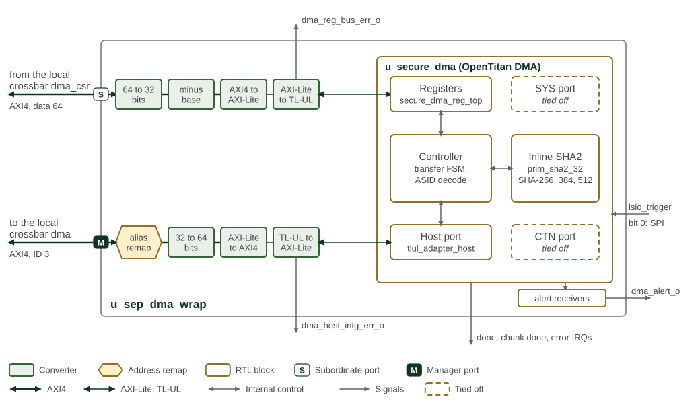

Direct Memory Access (DMA)
The SEP DMA copies data between addressable memories and peripheral registers, with optional inline SHA-256, SHA-384 or SHA-512 hashing. It uses the OpenTitan DMA Controller inside an AXI wrapper. The integration below defines which upstream ports and hardware triggers are available in SEP.
Source and destination addresses independently support incrementing, fixed address and wrap-at-chunk-boundary operation. Use incrementing addresses for memory and a fixed address for a peripheral FIFO. Transfers use 1-, 2- or 4-byte accesses; inline hashing requires 4-byte transfers. The core issues individual TL-UL transactions, so the AXI wrapper does not turn a copy into a burst transfer. Hash results are read from the DMA digest registers.
OpenTitan DMA core and inline hashing reference architecture shows the upstream DMA core. SEP adapts the host register interface to its AXI fabric as described below.
OCAH Modifications
SEP secure DMA integration shows how sep_dma_wrap connects the DMA core
to the SEP local crossbar. The register path runs left to right along the top
and the host path right to left along the bottom; green boxes are converters,
and the dashed ports are tied off.

The wrapper exposes separate AXI4 register-slave and DMA-master interfaces, both with 32-bit addresses and 64-bit data. Internally, the register path converts AXI4 to 32-bit AXI4-Lite and then TL-UL; the data path converts the core’s TL-UL host port back to AXI4. A local-alias remapper precedes the SEP crossbar and leaves the CPU TCM backdoor range available to DMA.
Use source and destination address-space ID 0x7 (the core’s internal host
port), with both high address registers zero. The upstream SoC control and
system ports are tied off in this wrapper; their ASIDs do not provide
additional SEP routes. Reachability is governed by the SEP fabric and filters.
The master path leaves AxUSER at zero. The register and host bridges latch
faults on dma_reg_bus_err_o and dma_host_intg_err_o, cleared through
DMA_BUS_ERR_CLEAR; local alert receivers aggregate the core alerts into
dma_alert_o. Selecting the tied-off CTN or SYS address space does not complete.
Only handshake input 0 is connected, to the SPI host’s LSIO trigger. All other trigger inputs are tied low; SEP does not wire UART or I3C handshake paths. This does not prevent software-initiated accesses to reachable peripheral registers.
Programming a Copy
For one contiguous memory-to-memory copy:
-
Wait until the previous operation has finished and configuration is writable (
CFG_REGWEN). Configure a valid enabled-memory base/limit pair and setRANGE_VALIDbefore starting; observeRANGE_REGWENif firmware has locked that configuration. -
Write
SRC_ADDR_LOandDST_ADDR_LO, clear both high address registers, and select0x7for both fields inADDR_SPACE_ID(0x77combined). -
Set
TRANSFER_WIDTHto 0, 1 or 2 for 1, 2 or 4 bytes respectively. Align both addresses to that width. EnableINCREMENTand clearWRAPin bothSRC_CONFIGandDST_CONFIG. -
Set
CHUNK_DATA_SIZEandTOTAL_DATA_SIZEto the same nonzero byte count. -
Write
CONTROLwithOPCODE=0(copy),HARDWARE_HANDSHAKE_ENABLE=0,INITIAL_TRANSFER=1andGO=1. -
Check
STATUS.ERRORandERROR_CODEwhile waiting forSTATUS.DONE. Use a bounded wait in firmware. For interrupt-driven operation, enable the required completion/error sources and acknowledgeINTR_STATE.
The core reports transaction completion, chunk completion and error separately. Chunk completion applies to multi-chunk transfers without hardware handshake; it is not a per-trigger interrupt in handshake mode. Status completion/error bits are write-one-to-clear; the detailed register map defines each bit.
For hashing, select opcode 1, 2 or 3 for SHA-256, SHA-384 or SHA-512 and use
4-byte transfers. Set INITIAL_TRANSFER on the first transfer of the message;
read the digest only when STATUS.SHA2_DIGEST_VALID is set. DIGEST_SWAP
controls byte order within each digest register, not register order.
For SPI handshake operation, select trigger 0 in HANDSHAKE_INTR_ENABLE,
configure the peripheral FIFO and chunk size, and enable hardware handshake.
A chunk consumes the configured number of bytes per service operation.
Firmware must clear GO when stopping handshake operation. To abort an active
operation, request CONTROL.ABORT and wait for STATUS.ABORTED before reusing
its buffers or configuration. For a peripheral requiring an explicit trigger-clear
write, configure CLEAR_INTR_SRC, CLEAR_INTR_BUS, INTR_SRC_ADDR and
INTR_SRC_WR_VAL for the connected host port (CLEAR_INTR_BUS bit 0 = 1);
otherwise leave that source
unselected in CLEAR_INTR_SRC.
Future Enhancements
The following are proposals, not capabilities of the current SEP integration:
-
Inline AES encryption or decryption (with/without inline hashing)
-
Inline hashing with only digest written to target slave
-
Optimize implementation by using cryptographic resources (AES, HMAC-SHA2) engines inside the cryptographic subsystem and adding streaming interfaces
-
Replace the FSM controller with a microsequencer or simple CPU, potentially shared with the Key Manager
Memory Map and Register Reference
Memory Map
Register offsets are relative to the block base in the subsystem memory map. The detailed map below defines each register and its fields.
Detailed Register Map
DMA Controller
DMA Controller for the integrated OpenTitan.
Register Arrays:
- SHA2_DIGEST_0[16]: 16 registers, base 0x58, stride 0x4
- INTR_SRC_ADDR_0[11]: 11 registers, base 0xA4, stride 0x4
- INTR_SRC_WR_VAL_0[11]: 11 registers, base 0x124, stride 0x4
Register List:
| Address | Name | Access | Description |
|---|---|---|---|
| 0x0 | INTR_STATE | R | - |
| 0x4 | INTR_ENABLE | RW | - |
| 0x8 | INTR_TEST | W | - |
| 0xC | ALERT_TEST | W | - |
| 0x10 | SRC_ADDR_LO | RW | - |
| 0x14 | SRC_ADDR_HI | RW | - |
| 0x18 | DST_ADDR_LO | RW | - |
| 0x1C | DST_ADDR_HI | RW | - |
| 0x20 | ADDR_SPACE_ID | RW | - |
| 0x24 | ENABLED_MEMORY_RANGE_BASE | RW | - |
| 0x28 | ENABLED_MEMORY_RANGE_LIMIT | RW | - |
| 0x2C | RANGE_VALID | RW | - |
| 0x30 | RANGE_REGWEN | RW | - |
| 0x34 | CFG_REGWEN | R | - |
| 0x38 | TOTAL_DATA_SIZE | RW | - |
| 0x3C | CHUNK_DATA_SIZE | RW | - |
| 0x40 | TRANSFER_WIDTH | RW | - |
| 0x44 | CONTROL | RW | - |
| 0x48 | SRC_CONFIG | RW | - |
| 0x4C | DST_CONFIG | RW | - |
| 0x50 | STATUS | RW | - |
| 0x54 | ERROR_CODE | R | - |
| 0x58 - 0x94 | SHA2_DIGEST_0[16] | R | - |
| 0x98 | HANDSHAKE_INTR_ENABLE | RW | - |
| 0x9C | CLEAR_INTR_SRC | RW | - |
| 0xA0 | CLEAR_INTR_BUS | RW | - |
| 0xA4 - 0xCC | INTR_SRC_ADDR_0[11] | RW | - |
| 0x124 - 0x14C | INTR_SRC_WR_VAL_0[11] | RW | - |
Register Details:
INTR_STATE
| Bits | Field | Access | Reset | Description |
|---|---|---|---|---|
| 31:3 | Reserved | - | - | Reserved |
| 2 | DMA_ERROR | R | 0x0 | DMA error has occurred. DMA_STATUS.error_code register shows the details. |
| 1 | DMA_CHUNK_DONE | R | 0x0 | Indicates the transfer of a single chunk has been completed. |
| 0 | DMA_DONE | R | 0x0 | DMA operation has been completed. |
INTR_ENABLE
| Bits | Field | Access | Reset | Description |
|---|---|---|---|---|
| 31:3 | Reserved | - | - | Reserved |
| 2 | DMA_ERROR | RW | 0x0 | Enable interrupt when !!INTR_STATE.dma_error is set. |
| 1 | DMA_CHUNK_DONE | RW | 0x0 | Enable interrupt when !!INTR_STATE.dma_chunk_done is set. |
| 0 | DMA_DONE | RW | 0x0 | Enable interrupt when !!INTR_STATE.dma_done is set. |
INTR_TEST
| Bits | Field | Access | Reset | Description |
|---|---|---|---|---|
| 31:3 | Reserved | - | - | Reserved |
| 2 | DMA_ERROR | W | 0x0 | Write 1 to force !!INTR_STATE.dma_error to 1. |
| 1 | DMA_CHUNK_DONE | W | 0x0 | Write 1 to force !!INTR_STATE.dma_chunk_done to 1. |
| 0 | DMA_DONE | W | 0x0 | Write 1 to force !!INTR_STATE.dma_done to 1. |
ALERT_TEST
| Bits | Field | Access | Reset | Description |
|---|---|---|---|---|
| 31:1 | Reserved | - | - | Reserved |
| 0 | FATAL_FAULT | W | 0x0 | Write 1 to trigger one alert event of this kind. |
SRC_ADDR_LO
| Bits | Field | Access | Reset | Description |
|---|---|---|---|---|
| 31:0 | SRC_ADDR_LO | RW | 0x0 | Lower 32 bits of the source address. Must be aligned to the transfer width. |
SRC_ADDR_HI
| Bits | Field | Access | Reset | Description |
|---|---|---|---|---|
| 31:0 | SRC_ADDR_HI | RW | 0x0 | Upper 32 bits of the physical or virtual address of memory location within SoC memory address map or physical address within OT non-secure memory space. Must be aligned to the transfer width. Source and destination address must have the same alignment. |
DST_ADDR_LO
| Bits | Field | Access | Reset | Description |
|---|---|---|---|---|
| 31:0 | DST_ADDR_LO | RW | 0x0 | Lower 32 bits of the destination address. Must be aligned to the transfer width. Source and destination address must have the same alignment. |
DST_ADDR_HI
| Bits | Field | Access | Reset | Description |
|---|---|---|---|---|
| 31:0 | DST_ADDR_HI | RW | 0x0 | Upper 32 bits of the physical or virtual address of memory location within SoC memory address map or physical address within OT non-secure memory space. Must be aligned to the transfer width. Source and destination address must have the same alignment. |
ADDR_SPACE_ID
| Bits | Field | Access | Reset | Description |
|---|---|---|---|---|
| 31:8 | Reserved | - | - | Reserved |
| 7:4 | DST_ASID | RW | 0x7 | Target address space that the destination address pointer refers to. |
| 3:0 | SRC_ASID | RW | 0x7 | Target address space that the source address pointer refers to. |
ENABLED_MEMORY_RANGE_BASE
| Bits | Field | Access | Reset | Description |
|---|---|---|---|---|
| 31:0 | BASE | RW | 0x0 | Base Address to mark the start of the DMA enabled memory range within the OT internal memory space. |
ENABLED_MEMORY_RANGE_LIMIT
| Bits | Field | Access | Reset | Description |
|---|---|---|---|---|
| 31:0 | LIMIT | RW | 0x0 | Limit Address to mark the end of the DMA enabled memory range within the OT internal memory space; inclusive. |
RANGE_VALID
| Bits | Field | Access | Reset | Description |
|---|---|---|---|---|
| 31:1 | Reserved | - | - | Reserved |
| 0 | RANGE_VALID | RW | 0x0 | Once set the enabled memory base and limit registers are valid. |
RANGE_REGWEN
| Bits | Field | Access | Reset | Description |
|---|---|---|---|---|
| 31:4 | Reserved | - | - | Reserved |
| 3:0 | REGWEN | RW0C | 0x6 | Used by firmware to lock the DMA enabled memory range configuration registers from further modification. Once this register is set to kMultiBitBool4False, it can only be set to kMultiBitBool4True through a reset event. Default Value = kMultiBitBool4True -> Unlocked at reset. |
CFG_REGWEN
| Bits | Field | Access | Reset | Description |
|---|---|---|---|---|
| 31:4 | Reserved | - | - | Reserved |
| 3:0 | REGWEN | R | 0x6 | Used by hardware to lock the DMA configuration registers. This register is purely managed by hardware and only software readable. |
TOTAL_DATA_SIZE
| Bits | Field | Access | Reset | Description |
|---|---|---|---|---|
| 31:0 | DATA_SIZE | RW | 0x0 | Total size (in bytes) of the data to be transferred. The complete transfer operation may consist of multiple chunks of data as specified by the CHUNK_DATA_SIZE register. Minimum: 1 byte. Maximum: May be restricted to a maximum pre-defined size based on OT DMA enabled memory space allocation. Works in conjunction with the TRANSFER_WIDTH register. |
CHUNK_DATA_SIZE
| Bits | Field | Access | Reset | Description |
|---|---|---|---|---|
| 31:0 | DATA_SIZE | RW | 0x0 | Size (in bytes) for a single DMA transfer. In hardware handshake mode, the DMA reads in chunks of CHUNK_DATA_SIZE from the peripheral. For a single memory transfer CHUNK_DATA_SIZE and TOTAL_DATA_SIZE are set to the same value. Minimum: 1 byte. Maximum: May be restricted to a maximum pre-defined size based on OT DMA enabled memory space allocation. Works in conjunction with the TRANSFER_WIDTH register. |
TRANSFER_WIDTH
| Bits | Field | Access | Reset | Description |
|---|---|---|---|---|
| 31:2 | Reserved | - | - | Reserved |
| 1:0 | TRANSACTION_WIDTH | RW | 0x2 | Denotes the width of each transaction that the DMA shall issue during the data movement. Multiple transactions of this width will be issued until TOTAL_DATA_SIZE bytes have been transferred. Note that firmware may need to set a different value if a receiving IP supports a read / write transaction width that is less than 1 DWORD. This does not affect the wrap-around mechanism. Note that the value 3 for this register represents an invalid configuration that leads to an error. |
CONTROL
| Bits | Field | Access | Reset | Description |
|---|---|---|---|---|
| 31 | GO | RW | 0x0 | Setting this bit triggers the DMA operation. For normal operation, the DMA engine clears the `go` bit automatically after the configured operation is complete. For Hardware handshake operation, DMA engine does not auto clear the Go bit. Firmware shall clear the Go bit when it intends to stop the hardware handshake operation. |
| 30:28 | Reserved | - | - | Reserved |
| 27 | ABORT | W | 0x0 | Aborts the DMA operation if this bit is set. Sets the corresponding bit in the status register once abort operation is complete. Any OpenTitan-internal transactions are guaranteed to complete, but there are no guarantees on the SoC interface. |
| 26:9 | Reserved | - | - | Reserved |
| 8 | INITIAL_TRANSFER | RW | 0x0 | Marks the initial transfer to initialize the DMA and SHA engine for one transfer that can span over multiple single DMA transfers. Used for hardware handshake and ordinary transfers, in which multiple transfers contribute to a final digest. Note, for non-handshake transfers with inline hashing mode enabled, this bit must be set to also mark the first transfer. |
| 7:6 | Reserved | - | - | Reserved |
| 5 | DIGEST_SWAP | RW | 0x0 | Digest register byte swap. If 1 the value in each digest output register is converted to big-endian byte order. This setting does not affect the order of the digest output registers, !!SHA2_DIGEST_0 still contains the first 4 bytes of the digest. |
| 4 | HARDWARE_HANDSHAKE_ENABLE | RW | 0x0 | Enable hardware handshake mode. Used to clear FIFOs from low speed IO peripherals receiving data, e.g., I3C receive buffer. Listen to an input trigger signal. Read data from source address location. Copy to destination address. Number of bytes specified in size register. Note assumption is the peripheral lowers input once FIFO is cleared. No explicit clearing necessary. |
| 3:0 | OPCODE | RW | 0x0 | Defines the type of DMA operations. |
SRC_CONFIG
| Bits | Field | Access | Reset | Description |
|---|---|---|---|---|
| 31:2 | Reserved | - | - | Reserved |
| 1 | WRAP | RW | 0x0 | When 0: Chunks occupy contiguous ascending addresses. When 1: Source address wraps back to the starting address when finishing a chunk. |
| 0 | INCREMENT | RW | 0x0 | Defines the increment behavior after every DMA read. When 0: Source address is not changed. All reads are done from the same address. When 1: Source address is incremented by transfer_width after each read. |
DST_CONFIG
| Bits | Field | Access | Reset | Description |
|---|---|---|---|---|
| 31:2 | Reserved | - | - | Reserved |
| 1 | WRAP | RW | 0x0 | When 0: Chunks occupy contiguous ascending addresses. When 1: Destination address wraps back to the starting address when finishing a chunk. |
| 0 | INCREMENT | RW | 0x0 | Defines the increment behavior after every DMA write. When 0: Destination address is not changed. All writes are done to the same address. When 1: Destination address is incremented by transfer_width after each write. |
STATUS
| Bits | Field | Access | Reset | Description |
|---|---|---|---|---|
| 31:6 | Reserved | - | - | Reserved |
| 5 | CHUNK_DONE | RW1C | 0x0 | Transfer of a single chunk is complete. Only raised for multi-chunk memory-to-memory transfers. Cleared automatically by the hardware when starting the transfer of a new chunk. |
| 4 | SHA2_DIGEST_VALID | R | 0x0 | Indicates whether the SHA2_DIGEST register contains a valid digest. This value is cleared on the initial transfer and set when the digest is written. |
| 3 | ERROR | RW1C | 0x0 | Error occurred during the operation. ERROR_CODE register denotes the source of the error. |
| 2 | ABORTED | RW1C | 0x0 | Set once aborted operation drains. |
| 1 | DONE | RW1C | 0x0 | Configured DMA operation is complete. Cleared automatically by the hardware when starting a new transfer. |
| 0 | BUSY | R | 0x0 | DMA operation is active if this bit is set. DMA engine clears this bit when operation is complete. This bit may be set as long as hardware handshake mode is active and triggered. |
ERROR_CODE
| Bits | Field | Access | Reset | Description |
|---|---|---|---|---|
| 31:8 | Reserved | - | - | Reserved |
| 7 | ASID_ERROR | R | 0x0 | The source or destination ASID contains an invalid value. |
| 6 | RANGE_VALID_ERROR | R | 0x0 | The DMA enabled memory range is not configured. |
| 5 | BASE_LIMIT_ERROR | R | 0x0 | The base and limit addresses contain an invalid value. |
| 4 | BUS_ERROR | R | 0x0 | The bus transfer returned an error. |
| 3 | SIZE_ERROR | R | 0x0 | TRANSFER_WIDTH encodes an invalid value, TOTAL_DATA_SIZE or CHUNK_SIZE are zero, or inline hashing is not using 32-bit transfer width |
| 2 | OPCODE_ERROR | R | 0x0 | Opcode is invalid. |
| 1 | DST_ADDR_ERROR | R | 0x0 | Destination address is invalid. |
| 0 | SRC_ADDR_ERROR | R | 0x0 | Source address is invalid. |
SHA2_DIGEST_0[16]
| Bits | Field | Access | Reset | Description |
|---|---|---|---|---|
| 31:0 | DATA_0 | R | 0x0 | SHA2 digest data |
HANDSHAKE_INTR_ENABLE
| Bits | Field | Access | Reset | Description |
|---|---|---|---|---|
| 31:11 | Reserved | - | - | Reserved |
| 10:0 | MASK | RW | 0x7FF | Enable bits for incoming handshake interrupt wires. |
CLEAR_INTR_SRC
| Bits | Field | Access | Reset | Description |
|---|---|---|---|---|
| 31:11 | Reserved | - | - | Reserved |
| 10:0 | SOURCE | RW | 0x0 | Source N needs interrupt cleared |
CLEAR_INTR_BUS
| Bits | Field | Access | Reset | Description |
|---|---|---|---|---|
| 31:11 | Reserved | - | - | Reserved |
| 10:0 | BUS | RW | 0x0 | Bus selection bit for source N. |
INTR_SRC_ADDR_0[11]
| Bits | Field | Access | Reset | Description |
|---|---|---|---|---|
| 31:0 | ADDR_0 | RW | 0x0 | Destination address for interrupt source clearing write. |
INTR_SRC_WR_VAL_0[11]
| Bits | Field | Access | Reset | Description |
|---|---|---|---|---|
| 31:0 | WR_VAL_0 | RW | 0x0 | Write value for interrupt clearing write. |